Chapter 6: Identity & Access Management¶
Identity and Access Management (IAM) is about making sure the right people, and the right machines, get the right access to the right things, and nobody else does. These tools prove who you are when you log in, decide what you are allowed to touch, guard the most powerful accounts and secrets, and spot when someone is misusing a stolen identity. Because most modern breaches start with a stolen password or account, identity has become the new front door of security.
6.1 Identity Providers & Single Sign-On¶
An identity provider (IdP) is a central system that keeps track of every user account and checks who you are when you log in. Single Sign-On (SSO) means you log in once with that central account and then get into all your work apps (email, chat, payroll) without typing a new password for each one.

Think of it like…
It is like a festival wristband: you show your ID once at the main gate, get a wristband, and every stage and food stall simply checks the wristband instead of asking for ID again.
Real-world example
Northwind Logistics has 900 staff using 60 different cloud apps. They connect all of them to Microsoft Entra ID, so staff sign in once each morning and reach every app from one portal. When a warehouse manager leaves, HR disables her single account and her access to all 60 apps disappears in seconds. Help-desk password reset calls drop by half.
How it works¶
- Users are stored in one directory, often synced from HR or Active Directory
- Each app is connected to the IdP using standards like SAML or OpenID Connect
- A user logs in once at the IdP, usually with MFA
- The IdP sends each app a signed 'this person is verified' token
- Disabling the account in the IdP cuts off every connected app at once
Who uses it
IT and security teams in organisations of every size, from schools and startups to banks and governments.
Key takeaway
Put every app you can behind SSO and turn on MFA at the identity provider, so one strong front door protects everything.
Going deeper
- SAML 2.0 (2005) passes signed XML assertions through the browser and still dominates older enterprise apps; OpenID Connect (2014) adds JSON Web Token ID tokens on top of OAuth 2.0 and is the default for modern web and mobile apps.
- OAuth 2.0 is about authorisation (letting an app call an API with an access token), not login; OIDC adds the identity layer. OAuth 2.1 bakes in best practice: PKCE for every client, no implicit flow, exact redirect matching.
- SCIM 2.0 (RFC 7643/7644) handles provisioning: the IdP automatically creates, updates and deactivates accounts inside SaaS apps, while SSO only handles the sign-in itself. You usually need both.
- Conditional Access or adaptive policies weigh user, group, device compliance, location and sign-in risk at every login, then allow, require MFA or a managed device, or block. This is the policy engine of zero trust.
- Token lifetimes matter: ID and access tokens typically last about an hour, refresh tokens days to months. Stolen session cookies bypass MFA, so short lifetimes, continuous access evaluation and token binding limit replay.
- Federation lets organisations trust each other's IdPs, for example B2B guest access or the eduGAIN research federation, so visitors sign in with their home account instead of a new password.
Common mistakes & misconceptions
- Assuming SSO automatically means MFA; SSO only centralises login, so enforce MFA and device policies at the identity provider itself.
- Leaving app-local passwords and admin logins active after SSO rollout, creating a side door; disable them or vault them as break-glass accounts.
- Disabling a leaver's IdP account but not revoking live sessions and refresh tokens, or skipping SCIM deprovisioning, so access lingers for hours or longer.
- Accepting an OAuth access token as proof of who the user is; apps must validate the OIDC ID token's signature, issuer, audience and expiry.
Try it: Look at the public OpenID Connect settings an identity provider publishes for apps¶
curl https://login.microsoftonline.com/common/v2.0/.well-known/openid-configuration
Popular tools & products¶
| Name | What it does | Example |
|---|---|---|
| Microsoft Entra ID Microsoft · Cloud service |
Microsoft's cloud identity service (formerly Azure AD) behind Microsoft 365 sign-ins, offering SSO, MFA and Conditional Access policies. | A hospital lets nurses use SSO to Microsoft 365 and 40 SaaS apps, but blocks sign-ins from unmanaged devices with a Conditional Access rule. |
| Okta Workforce Identity Okta · Cloud service |
Independent cloud identity platform offering SSO, MFA and automatic account creation across thousands of pre-built app integrations. | A fast-growing startup connects Slack, Zoom, Salesforce and GitHub to Okta so new hires get every account created on day one. |
| PingOne / PingFederate Ping Identity · Commercial |
Enterprise identity platform with cloud (PingOne) and self-hosted (PingFederate) options, popular in large banks and complex hybrid environments. | A bank uses PingFederate to give employees SSO into both decades-old internal systems and modern cloud apps. |
| Google Cloud Identity Google · Cloud service |
Google's identity service, built into Google Workspace, that manages users, devices and SSO to Google and third-party apps. | A school district manages 20,000 student Chromebook logins and SSO to learning apps through Google Cloud Identity. |
| JumpCloud JumpCloud · Cloud service |
Cloud directory aimed at small and mid-sized firms, combining user accounts, SSO, MFA and Windows, Mac and Linux device management. | A 120-person design agency without servers uses JumpCloud to control laptop logins and app access for its mixed Mac and Windows fleet. |
| OneLogin One Identity · Cloud service |
Cloud SSO and MFA service with a portal of app connectors, popular with mid-sized businesses. | A retail chain gives store managers one OneLogin portal to reach scheduling, inventory and training apps. |
| Keycloak CNCF project, sponsored by Red Hat · Open source |
Free, self-hosted identity and access server supporting SSO, OpenID Connect, SAML, user federation and social login. | A university runs Keycloak so students use one login across its self-built course portal, library system and lab booking app. |
| Authentik Authentik Security · Open source |
Self-hosted identity provider with a friendly web interface, popular with home labs and small teams for SSO and MFA. | A small IT consultancy puts its internal wiki, Grafana and file server behind Authentik with one login and passkey support. |
| AWS IAM Identity Center Amazon Web Services · Cloud service |
AWS service giving staff single sign-on into many AWS accounts and business apps, often linked to an existing IdP. | A fintech with 30 AWS accounts lets engineers sign in once and pick which account and role they need for the day. |
| IBM Verify IBM · Cloud service |
IBM's identity service (formerly IBM Security Verify) offering SSO, adaptive MFA and access policies, in the cloud or self-hosted. | An insurer links its customer-service apps to IBM Verify so agents sign in once and risky logins trigger an extra check. |
| Microsoft AD FS (Active Directory Federation Services) Microsoft · Platform |
On-premises Windows Server role providing SAML and WS-Federation SSO; still common, but Microsoft recommends moving apps to Entra ID. | A manufacturer migrates 80 apps from its ageing AD FS farm to Entra ID, retiring servers that attackers target to forge sign-in tokens. |
| Shibboleth Identity Provider Shibboleth Consortium · Open source |
Open-source SAML identity provider used by universities and research federations worldwide for federated login to shared services. | A student signs in with her university account to read online journals through the eduGAIN federation, powered by Shibboleth. |
6.2 Directory Services (Active Directory, LDAP & FreeIPA)¶
A directory is the central address book of an organisation's IT: it lists every user, group and computer and holds their passwords and settings. When you log in to a work PC, a file share or a Linux server, the directory checks your password and tells the system which groups you belong to. LDAP is the common 'language' apps use to look things up in a directory.

Think of it like…
It is like a company's staff register at reception: it says who works here, which department they are in and which rooms their badge opens, and every door reader checks against it.
Real-world example
Oakfield Council runs Active Directory for 2,500 staff PCs and syncs it to Microsoft Entra ID with Entra Connect, so the same account works for Microsoft 365. Its Linux servers join a FreeIPA domain that trusts Active Directory. When a planning officer moves to the housing team, IT changes her group membership once and her file-share and app access update everywhere.
How it works¶
- Create users, groups and computer accounts in the directory
- PCs, servers and apps send logins to the directory using Kerberos or LDAP
- Group membership decides access to file shares, printers and apps
- Sync the directory to a cloud identity provider for SSO to cloud apps
- Harden, monitor and back up domain controllers, because attackers target them first
Who uses it
IT administrators in almost every company, school, hospital and government body running Windows or Linux networks.
Key takeaway
Treat domain controllers as your most critical servers: limit who can administer them, use LDAPS (encrypted LDAP) and keep tested offline backups.
Going deeper
- Active Directory is organised into forests, domains and organisational units (OUs); Group Policy Objects linked to OUs push settings such as password rules, firewall config and software to thousands of PCs.
- Kerberos (RFC 4120) is AD's default logon protocol, with NTLM as the old fallback. Microsoft declared NTLM deprecated in 2024 and is adding Kerberos-based replacements so it can eventually be switched off.
- LDAP (RFC 4511) uses port 389 and LDAPS port 636; Global Catalog queries use 3268/3269. Enforcing LDAP signing and channel binding stops credential-relay attacks against domain controllers.
- Microsoft's tiered model treats domain controllers, AD CS, Entra Connect and identity tools as Tier 0; their admin accounts should never sign in to ordinary servers or workstations where credentials could be stolen.
- The krbtgt account's key signs every ticket in the domain, so after a compromise it must be reset twice, with replication time in between, to invalidate forged 'golden tickets'.
- Hybrid identity options: password hash sync (recommended; also enables leaked-credential detection), pass-through authentication, or federation through AD FS, all bridging on-premises AD to Entra ID.
Common mistakes & misconceptions
- Treating AD backups like ordinary file backups; you need offline, malware-free domain controller backups and a rehearsed forest recovery plan.
- Keeping everyday IT staff in Domain Admins; most tasks need only delegated rights on specific OUs, and domain admins should log on only to domain controllers.
- Assuming LDAP is encrypted; a simple bind over plain port 389 sends the password in clear text unless LDAPS or StartTLS is used.
- Never cleaning up stale users and computers; disabled-but-forgotten or inactive accounts are easy footholds and clutter access reviews.
Try it: Look up one user's name and email in an LDAP directory (read-only query, example server)¶
ldapsearch -x -H ldaps://ldap.example.com -b "dc=example,dc=com" "(uid=alice)" cn mail
Popular tools & products¶
| Name | What it does | Example |
|---|---|---|
| Active Directory Domain Services Microsoft · Platform |
The classic on-premises Windows directory storing users, computers and groups, and checking logins inside company networks using Kerberos and LDAP. | A manufacturer uses Active Directory so workers log in to shared factory PCs with their own account and get the right network drives automatically. |
| Microsoft Entra Connect & Cloud Sync Microsoft · Free |
Free Microsoft tools that copy users, groups and password hashes from on-premises Active Directory into Entra ID for cloud sign-in. | A hospital syncs its Active Directory accounts to Entra ID overnight, so staff use one password for PCs and Microsoft 365. |
| Microsoft Entra Domain Services Microsoft · Cloud service |
Managed, Active Directory-compatible domain in Azure for older apps needing LDAP, Kerberos or Group Policy, without running domain controllers. | A software firm moves a legacy HR app to Azure and points it at Entra Domain Services instead of building new domain controllers. |
| AWS Directory Service (AWS Managed Microsoft AD) Amazon Web Services · Cloud service |
Real Microsoft Active Directory run and patched by AWS, so Windows workloads in AWS can join a domain. | A logistics company runs its Windows file servers on AWS and joins them to AWS Managed Microsoft AD with a trust to its office domain. |
| OpenLDAP OpenLDAP Project · Open source |
Long-standing open-source LDAP directory server, widely used on Linux and embedded in many products and appliances. | A web host keeps customer control-panel accounts in OpenLDAP, with replication between two data centres. |
| FreeIPA / Red Hat Identity Management FreeIPA project, sponsored by Red Hat · Open source |
Linux identity management combining an LDAP directory, Kerberos logins, DNS and a certificate authority; sold by Red Hat as IdM. | A research lab uses FreeIPA so scientists log in to hundreds of Linux servers with one central account and shared sudo rules. |
| 389 Directory Server 389 Project (Red Hat community) · Open source |
High-performance open-source LDAP server, also sold as Red Hat Directory Server; it is the directory inside FreeIPA. | A telecom stores millions of subscriber profiles in 389 Directory Server for fast lookups by its network systems. |
| Samba Active Directory Samba Team · Open source |
Open-source software that lets a Linux server act as an Active Directory-compatible domain controller and Windows file server. | A small school without Windows Server licences runs Samba as its domain controller so pupils log in to classroom PCs. |
| PingDirectory Ping Identity · Commercial |
Scalable directory built to store hundreds of millions of customer and partner identities for large consumer services. | A national telecom stores 40 million customer accounts in PingDirectory behind its app and website login. |
| Univention Corporate Server (UCS) Univention · Freemium |
German Linux-based identity and directory platform compatible with Active Directory, popular in schools and the European public sector. | A German state school network manages teacher and pupil accounts centrally with UCS, keeping data on its own servers. |
| ManageEngine ADManager Plus ManageEngine (Zoho) · Commercial |
Web console for managing Active Directory in bulk: creating and removing users, cleaning stale accounts and producing access reports. | A help desk disables 300 inactive accounts found by ADManager Plus's stale-user report before an audit. |
6.3 Multi-Factor Authentication & Passwordless/Passkeys¶
Multi-factor authentication (MFA) means proving who you are with more than just a password, for example a code on your phone or a tap on a small USB key. Passwordless logins and passkeys go further and replace the password entirely with your device plus your fingerprint, face or PIN, which cannot be phished by fake websites.

Think of it like…
A password alone is like a house key that anyone can copy; MFA is like also needing your face recognised by the doorman, and a passkey is a key that only fits your own front door and refuses to work in a fake lock.
Real-world example
Riverbend Credit Union saw several staff fall for fake login pages that stole passwords. It gave every employee a YubiKey and switched admin accounts to phishing-resistant passkeys. A month later another phishing email arrived, an employee clicked it, but the stolen password was useless without the physical key. The attack went nowhere.
How it works¶
- The user enters a username (and sometimes a password)
- The system asks for a second proof: app approval, code, security key or biometric
- With passkeys, the device signs a challenge using a private key that never leaves it
- The passkey only works on the real website it was created for, so fake sites get nothing
- Access is granted only when every required factor checks out
Who uses it
Everyone, from home users protecting email and banking to enterprises, governments and cloud administrators.
Key takeaway
Any MFA is far better than none, but phishing-resistant methods such as passkeys and security keys are the gold standard, especially for admins.
Going deeper
- Factors are something you know (password, PIN), have (phone, security key) or are (fingerprint, face). Two codes from the same app are one factor, not two; strong MFA mixes different kinds.
- TOTP (RFC 6238) derives a six-digit code from a shared secret and the current 30-second window using HMAC; HOTP (RFC 4226) uses a counter. Both can be relayed in real time by proxy phishing sites.
- FIDO2 combines W3C WebAuthn, the browser API, with CTAP2, which talks to security keys over USB, NFC or Bluetooth. Each key pair is scoped to one website domain, which is why passkeys resist phishing.
- Synced passkeys (Apple, Google, Microsoft, 1Password) back up keys across a user's devices; device-bound passkeys on a hardware key never leave it and suit administrators and the highest assurance levels.
- MFA fatigue or 'push bombing' floods users with approval prompts until one is accepted; number matching, showing the sign-in location and rate limits counter it. Microsoft enforced number matching in 2023.
- NIST SP 800-63B classes SMS and voice codes as 'restricted' authenticators because of SIM swapping and interception, and CISA urges phishing-resistant MFA for administrators and other high-value accounts.
- Recovery is the weak spot: attackers target help desks and backup methods. Register at least two strong authenticators and verify identity properly before any MFA reset.
Common mistakes & misconceptions
- Believing any MFA stops phishing; adversary-in-the-middle kits relay codes and push approvals, while only FIDO2 passkeys and certificate-based methods are bound to the real site.
- Enrolling only one security key, so losing it forces a weak fallback; always register a backup key or a second passkey.
- Leaving legacy protocols such as IMAP, POP and basic authentication enabled, which skip MFA completely; block legacy authentication at the identity provider.
- Thinking passkeys send your fingerprint or face to the website; biometrics stay on the device and only unlock the local private key.
Try it: Show details of a plugged-in YubiKey using the free YubiKey Manager CLI¶
ykman info
Popular tools & products¶
| Name | What it does | Example |
|---|---|---|
| Cisco Duo Cisco · Cloud service |
Popular MFA service using push approvals on a phone app, plus device health checks before allowing access. | A law firm adds Duo to its VPN so lawyers approve each remote login with a tap on their phone. |
| Microsoft Authenticator Microsoft · Free |
Free phone app for MFA approvals with number matching, one-time codes and passkeys for Microsoft and other accounts. | Staff sign in to Microsoft 365, type the two-digit number shown on screen into the app, and are in. |
| Google Authenticator Google · Free |
Free app that generates six-digit codes that change every 30 seconds, compatible with most websites offering MFA. | A freelancer protects her domain registrar and cloud accounts with codes from Google Authenticator. |
| Twilio Authy Twilio · Free |
Free phone app for six-digit codes with encrypted cloud backup, making it easy to move to a new phone; the desktop app ended in 2024. | A gamer stores codes for several gaming and email accounts in Authy and restores them after replacing a broken phone. |
| Okta Verify Okta · Free |
Okta's authenticator app offering push approvals, codes and phishing-resistant device-bound sign-in for Okta-protected apps. | Employees at a software company approve Okta logins with a fingerprint on their phone via Okta Verify. |
| RSA SecurID RSA · Commercial |
Long-standing enterprise MFA using hardware tokens or an app that shows changing codes, common in banking and government. | Traders at an investment bank enter a SecurID code from a key-fob token when logging in remotely. |
| YubiKey Yubico · Hardware |
Small USB or NFC security key supporting FIDO2 passkeys and other standards; you tap it to log in. | A journalist protects her email and cloud storage with two YubiKeys, keeping one as a backup in a safe. |
| Google Titan Security Key Google · Hardware |
Google's FIDO security key that plugs in or taps by NFC, providing phishing-resistant sign-in and storing passkeys. | A political campaign staffer enrols a Titan key in Google's Advanced Protection Program to block account takeovers. |
| Passkeys (Apple, Google, Microsoft) FIDO Alliance standard; built into Apple, Google and Microsoft platforms · Platform |
Password replacement where your device holds a secret key, unlocked by face, fingerprint or PIN, synced across your devices. | A shopper signs in to her online shop account with Face ID on her iPhone instead of typing a password. |
| Windows Hello for Business Microsoft · Platform |
Built-in Windows sign-in using face, fingerprint or PIN tied to the device's security chip, replacing passwords at work. | An insurance company rolls out Windows Hello so staff unlock laptops and reach company apps with face recognition. |
| Microsoft Entra Certificate-Based Authentication / smart cards Microsoft and smart card vendors · Platform |
Login using a certificate stored on a smart card or badge, a phishing-resistant method widely used by governments. | Government contractors insert their ID badge into a laptop card reader and enter a PIN to sign in to cloud apps. |
| Feitian security keys Feitian Technologies · Hardware |
Widely sold, lower-cost FIDO2 security keys in USB, NFC and fingerprint (BioPass) versions, also supplied under other brands. | A school district issues Feitian NFC keys to finance staff so their payroll logins cannot be phished. |
6.4 Privileged Access Management¶
Privileged accounts are the 'super-user' logins, such as server administrators or database owners, that can change or delete almost anything. Privileged Access Management (PAM) tools lock these powerful passwords in a vault, hand them out only when needed, change them automatically and record what the admin does.
Think of it like…
It is like a hotel master key kept in the manager's safe: staff must sign it out, it is only lent for a short time, cameras watch while it is used, and the lock is changed after it comes back.
Real-world example
Harbor Energy had the same domain admin password shared by 15 IT staff for years. They deployed CyberArk so admins now request access, get a one-time password for two hours, and every session is recorded. When a contractor's laptop was later infected, the attackers found no reusable admin passwords to steal. Auditors also got a full log of who changed what on the billing servers.
How it works¶
- Discover all admin, service and root accounts across servers, cloud and network gear
- Store their passwords and keys in an encrypted vault and rotate them automatically
- Admins request access, sometimes with approval, for a limited time (just-in-time)
- Sessions go through a gateway that can record and monitor them
- Access expires automatically and the password is changed again
Who uses it
IT operations, cloud and security teams, especially in regulated sectors like banking, healthcare, energy and government.
Key takeaway
Nobody should have permanent admin rights; grant them just in time, for a short period, and record their use.
Going deeper
- Core PAM capabilities are credential vaulting and rotation, session brokering and recording, endpoint privilege management (removing local admin but elevating approved apps) and secrets delivery for applications.
- Zero standing privilege means no account holds permanent admin rights; roles are granted just in time and removed automatically, shrinking the window in which a stolen admin credential is useful.
- Break-glass emergency accounts sit outside normal controls for outages; keep at least two, store their credentials sealed or offline, exclude them carefully from policies and alert on every use.
- Cloud privilege needs CIEM (cloud infrastructure entitlement management) to find unused or excessive IAM roles, access keys and console admins across AWS, Azure and Google Cloud.
- Session recordings give auditors and investigators evidence; many tools index commands and keystrokes so a team can search thousands of sessions for who ran a dangerous command.
- Service accounts are the hardest to rotate because passwords hide in apps and scheduled tasks; Active Directory group Managed Service Accounts (gMSA) rotate automatically and avoid human-known passwords.
- Regulators and insurers expect PAM: PCI DSS v4.0 requires MFA for administrative access to card environments, and cyber-insurance questionnaires routinely ask about vaulting and MFA on admin accounts.
Common mistakes & misconceptions
- Vaulting shared admin passwords but never rotating them; a vault full of static passwords hides the problem rather than fixing it.
- Letting admins read email and browse the web with their privileged account; use separate admin accounts and dedicated privileged access workstations.
- Protecting everything except the PAM platform itself; its administrators, backups and recovery keys are Tier 0 and need the strictest controls.
- Ignoring non-human privileged accounts, which usually outnumber human admins and often hold the broadest rights.
Try it: Log in through a Teleport access proxy and open a recorded SSH session (example host names)¶
tsh login --proxy=teleport.example.com --user=alice
tsh ssh alice@web01
Popular tools & products¶
| Name | What it does | Example |
|---|---|---|
| CyberArk Privileged Access Manager (now Idira) Palo Alto Networks (CyberArk) · Commercial |
Market-leading PAM suite that vaults and rotates admin credentials and records sessions; now sold under Palo Alto Networks' Idira brand. | A global bank stores 50,000 server and database admin passwords in CyberArk, rotating each one after every use. |
| BeyondTrust Password Safe & Privileged Remote Access BeyondTrust · Commercial |
PAM products for vaulting admin passwords and giving vendors and staff controlled, recorded remote access to systems. | A hospital lets an equipment vendor reach one MRI server through BeyondTrust, with the session recorded and time-limited. |
| Delinea Secret Server Delinea · Commercial |
Password vault for privileged accounts with automatic rotation, approval workflows and session recording, cloud or on-premises. | A mid-sized retailer uses Secret Server to rotate local admin and service account passwords every 30 days. |
| One Identity Safeguard One Identity · Commercial |
PAM appliance combining a privileged password vault with session recording and behaviour analytics for admin activity. | A telecom operator records all firewall admin sessions through Safeguard and flags unusual commands for review. |
| KeeperPAM Keeper Security · Commercial |
Cloud-based PAM built on Keeper's zero-knowledge vault, adding secure remote connections, password rotation and session recording. | A small managed service provider gives technicians recorded RDP access to client servers without revealing any passwords. |
| Windows LAPS Microsoft · Free |
Built-in Windows feature that gives every computer a unique, automatically rotated local admin password stored in Active Directory or Entra ID. | A council IT team ends the 'same admin password on every PC' problem, stopping attackers hopping between machines. |
| Microsoft Entra Privileged Identity Management Microsoft · Cloud service |
Gives cloud admin roles just in time: users activate a role for a few hours, with approval and justification. | An engineer activates Global Administrator for two hours to fix a setting, with her manager approving the request. |
| Teleport Teleport (formerly Gravitational) · Freemium |
Access platform for servers, Kubernetes, databases and apps using short-lived certificates and session recording; source code is open (AGPL). | A SaaS company replaces shared SSH keys with Teleport so engineers get one-day certificates after signing in with SSO. |
| StrongDM StrongDM · Commercial |
Proxy that brokers access to databases, servers and Kubernetes clusters, with fine-grained permissions and full query logging. | A health-tech startup lets analysts query production databases through StrongDM, logging every query for compliance. |
| HashiCorp Boundary HashiCorp (IBM) · Freemium |
Identity-based remote access tool connecting users to hosts without exposing networks or handing out credentials; free source-available community edition. | A platform team uses Boundary so on-call engineers reach private servers without a VPN or knowing any passwords. |
| WALLIX Bastion WALLIX · Commercial |
European PAM solution providing a secure gateway, password vault and session recording, popular in industry and public sector. | A French water utility routes all maintenance access to its control systems through WALLIX Bastion with recording. |
| ManageEngine PAM360 ManageEngine (Zoho) · Commercial |
Affordable PAM suite with a password vault, automatic rotation, just-in-time access and session recording, popular with mid-sized firms. | A regional bank's IT team checks out server admin passwords from PAM360, which changes them again once the session ends. |
| Group Managed Service Accounts (gMSA) Microsoft · Free |
Active Directory service accounts whose long random passwords are generated and rotated automatically by domain controllers, so no human knows them. | A hospital runs its SQL Server and scheduled tasks under gMSAs, ending service passwords written in an old spreadsheet. |
6.5 Identity Governance & Administration¶
Identity Governance and Administration (IGA) makes sure each person has exactly the access their job needs, from the day they join until the day they leave. It automates giving and removing access, and regularly asks managers to confirm that everyone's access is still appropriate (called an access review or certification).
Think of it like…
It is like a building manager's master list of who holds which keys, who checks every quarter that nobody still has keys to rooms they no longer use, and who collects all keys when someone moves out.
Real-world example
Summit Health had former employees whose accounts still worked months after they left, which auditors flagged. They deployed SailPoint and linked it to the HR system. Now when someone is hired, moves teams or leaves, accounts are created, changed or removed automatically. Every quarter, managers get a simple list to approve or revoke their team's access, and the audit finding was closed.
How it works¶
- Connect the HR system as the source of truth for joiners, movers and leavers
- Define roles describing which access each job needs
- Automatically create, change and remove accounts as people's jobs change
- Run periodic access reviews where managers confirm or revoke access
- Enforce rules such as 'the same person cannot both create and approve payments'
Who uses it
Identity, compliance and audit teams in large or regulated organisations such as banks, insurers, hospitals and governments.
Key takeaway
Tie access to the HR system so leavers lose access automatically on their last day; orphaned accounts are a favourite entry point for attackers.
Going deeper
- Joiner-mover-leaver (JML) automation starts from the HR system such as Workday or SAP SuccessFactors; 'birthright' access comes from attributes like department, location and job code.
- Role-based access control (RBAC) bundles entitlements into roles, while attribute- and policy-based models evaluate rules at request time; role mining analyses existing access to suggest sensible roles.
- Separation of duties (SoD) rules block toxic combinations, such as creating a supplier and approving its payments; SOX auditors of listed US companies routinely test these in ERP systems like SAP.
- Access certification campaigns ask managers or app owners to keep or revoke each entitlement; good tools highlight unused or risky access so reviewers do not simply approve everything.
- Connectors reach target systems through APIs, SCIM, LDAP or databases; 'disconnected' apps fall back to help-desk tickets, which is where forgotten access usually hides.
- SOX, HIPAA, PCI DSS, DORA, GDPR and ISO/IEC 27001 (Annex A 5.15-5.18) all expect access to be granted, reviewed and removed in a controlled, evidenced way, and IGA produces that evidence.
Common mistakes & misconceptions
- Starting with a huge role-engineering project; begin with HR-driven joiner and leaver automation for critical apps, then refine roles over time.
- Treating access reviews as box-ticking; show usage data, make 'revoke' easy, and flag reviewers who approve everything in seconds.
- Forgetting movers: people collect access with every job change ('privilege creep') unless old entitlements are removed when they move.
Popular tools & products¶
| Name | What it does | Example |
|---|---|---|
| SailPoint Identity Security Cloud SailPoint · Cloud service |
Leading cloud IGA platform automating joiner-mover-leaver processes, access requests and certifications, with AI-assisted recommendations. | An airline uses SailPoint to remove all system access for departing crew within an hour of HR processing their exit. |
| SailPoint IdentityIQ SailPoint · Commercial |
SailPoint's self-hosted IGA product, highly customisable and widely used by large enterprises with complex requirements. | A national bank runs IdentityIQ on-premises to govern access to thousands of internal and legacy applications. |
| Saviynt Identity Cloud Saviynt · Cloud service |
Cloud identity platform combining governance, application access controls and privileged access in one service. | A pharmaceutical company uses Saviynt to review who can approve purchase orders in its SAP system. |
| Omada Identity Omada · Commercial |
Danish IGA solution delivered mainly as a cloud service, popular with European organisations for compliance-driven access governance. | A Scandinavian energy firm runs quarterly access reviews in Omada to satisfy regulatory audits. |
| Microsoft Entra ID Governance Microsoft · Cloud service |
Add-on to Entra ID providing lifecycle workflows, access packages, entitlement management and access reviews. | A consulting firm gives contractors an access package that expires automatically after their 90-day project ends. |
| One Identity Manager One Identity · Commercial |
Enterprise IGA product managing account lifecycles, roles, access requests and attestation across many systems. | A German manufacturer automates access to SAP and Active Directory based on job roles with One Identity Manager. |
| Okta Identity Governance Okta · Cloud service |
Governance features built into Okta, including access requests through chat tools, access certifications and lifecycle automation. | Employees request GitHub admin access from Slack; their manager approves it and it is removed automatically after a week. |
| IBM Verify Governance IBM · Commercial |
IBM's identity governance product for lifecycle management, role modelling, risk analysis and compliance reporting. | An insurer uses IBM's governance tool to detect staff holding conflicting permissions in its claims system. |
| midPoint Evolveum · Open source |
Open-source identity governance and administration platform for provisioning, roles, access requests and certification. | A university uses midPoint to create and remove student and staff accounts as people enrol, graduate or leave. |
| ConductorOne ConductorOne · Cloud service |
Modern cloud identity governance service focused on fast access reviews and just-in-time access to SaaS and cloud apps. | A tech scale-up cuts its SOC 2 access review from weeks to two days using ConductorOne. |
| Oracle Identity Governance Oracle · Commercial |
Long-established enterprise IGA product for provisioning, access requests and certifications, common in large Oracle-centric organisations. | A government ministry uses Oracle Identity Governance to grant and remove access to its Oracle finance and HR systems. |
6.6 Identity Threat Detection & Response¶
Identity Threat Detection and Response (ITDR) tools watch how accounts are used and raise the alarm when something looks like an attacker using a stolen identity, such as strange logins or attempts to grab admin rights. Many also check directories like Active Directory for weak settings and help restore them after an attack.
Think of it like…
It is like a bank's fraud team that notices your card being used in two countries at once and freezes it, plus an inspector who checks the vault doors for weak locks before thieves arrive.
Real-world example
Crestview Insurance installed Microsoft Defender for Identity on its domain controllers. One night it flagged an account requesting copies of every password hash, a classic attack technique. The security team disabled the account within minutes and found a compromised help-desk laptop. A separate PingCastle health check had earlier shown dozens of risky settings, which they then fixed.
How it works¶
- Collect sign-in and directory activity from Active Directory, Entra ID, Okta and others
- Learn what normal looks like for each user and account
- Detect attack patterns like password spraying, credential theft or privilege escalation
- Alert or automatically respond, for example forcing MFA or disabling an account
- Regularly scan directories for weak configurations and fix them
Who uses it
Security operations centres, Active Directory administrators and incident responders in medium and large organisations.
Key takeaway
Active Directory is the crown jewels in most ransomware attacks, so run a regular health check and monitor it constantly.
Going deeper
- Typical detections include password spraying, Kerberoasting (requesting service tickets to guess offline), DCSync (pretending to be a domain controller to copy hashes), forged golden tickets and pass-the-hash.
- Cloud identity signals include impossible travel, sign-ins via anonymising proxies, session-token replay, unusual OAuth consent grants and new MFA methods registered right after a risky login.
- Response actions range from step-up MFA and forced password reset to revoking refresh tokens and sessions, disabling the account, or isolating the device through EDR integration.
- Attack-path analysis graphs group memberships and permissions to show chains leading to Domain Admin; removing a handful of risky links can cut thousands of possible paths.
- Gartner coined 'ITDR' in 2022; it now often ships inside XDR and identity platforms alongside identity security posture management (ISPM), which finds misconfigurations before attackers do.
- After a full Active Directory compromise, recovery may mean restoring the forest from clean backups, resetting krbtgt twice and rotating every privileged credential, so practise it in advance.
Common mistakes & misconceptions
- Watching only cloud sign-ins while ignoring on-premises Active Directory, where most ransomware privilege escalation actually happens.
- Resetting a compromised user's password but not revoking active sessions and tokens, letting the attacker stay signed in.
- Running a directory health check once and filing the report; configuration drift returns, so scan regularly and track the score over time.
Try it: Run a read-only Active Directory health check with PingCastle (example domain)¶
PingCastle.exe --healthcheck --server corp.example.local
Popular tools & products¶
| Name | What it does | Example |
|---|---|---|
| Microsoft Defender for Identity Microsoft · Cloud service |
Monitors Active Directory and identity activity to detect attacks such as pass-the-hash, Kerberoasting and suspicious lateral movement. | It alerts a school's IT team when a compromised account starts mapping all admin users in the domain. |
| Microsoft Entra ID Protection Microsoft · Cloud service |
Scores the risk of each cloud sign-in and user, spotting leaked passwords and impossible travel, and can force MFA or resets. | When an employee's password appears in a leaked list, Entra ID Protection forces her to reset it at next login. |
| CrowdStrike Falcon Identity Protection CrowdStrike · Commercial |
Detects and blocks identity-based attacks on Active Directory and cloud identities in real time, adding MFA challenges when risky. | It challenges an unusual admin login to a file server with MFA, stopping an attacker using stolen credentials. |
| Semperis Directory Services Protector Semperis · Commercial |
Monitors Active Directory and Entra ID for risky changes, can automatically undo them, and helps rapid AD recovery after attacks. | When someone secretly adds an account to Domain Admins, Semperis reverses the change and alerts the team. |
| Purple Knight Semperis · Free |
Free tool that scans Active Directory and Entra ID for security weaknesses and gives a scored report with fixes. | A small council runs Purple Knight before its annual audit and fixes the ten highest-risk findings. |
| Silverfort Silverfort · Commercial |
Adds MFA and risk-based protection to systems that normally cannot support it, like legacy apps, command-line tools and service accounts. | A manufacturer forces MFA on remote PowerShell admin connections that previously only required a password. |
| Netwrix Threat Manager & Auditor Netwrix · Commercial |
Audits and monitors changes and suspicious activity in Active Directory, file servers and Microsoft 365, with automated responses. | A hospital is alerted when one account suddenly reads thousands of patient files on a shared drive. |
| PingCastle Netwrix (created by Vincent Le Toux) · Freemium |
Popular Active Directory health-check tool producing a risk score and plain report of weak settings and attack paths. | An IT consultant runs PingCastle at a new client and finds old admin accounts with passwords unchanged for ten years. |
| SentinelOne Singularity Identity SentinelOne · Commercial |
Detects identity attacks against Active Directory and Entra ID and uses deception (fake credentials) to trap attackers. | An attacker on a laptop grabs planted fake admin credentials, instantly revealing themselves when they try to use them. |
| Okta Identity Threat Protection Okta · Cloud service |
Continuously evaluates risk during a user's session and can log them out everywhere if their session looks hijacked. | When a session token is reused from a new country, Okta ends the user's sessions across all connected apps. |
| Tenable Identity Exposure Tenable · Commercial |
Continuously checks Active Directory and Entra ID for weak settings and attack paths and detects attacks without installing agents (formerly Tenable.ad). | A retailer's AD team gets an alert when a new account is quietly given rights to copy password data from domain controllers. |
6.7 Customer Identity (CIAM)¶
Customer Identity and Access Management (CIAM) handles sign-up and login for an organisation's customers, not its employees. It powers the 'Create account', 'Sign in with Google' and 'Forgot password' parts of websites and apps, while keeping millions of customer accounts safe from fraud and bots.
Workforce IAM vs customer IAM
| Workforce IAM | Customer IAM (CIAM) | |
|---|---|---|
| Users | Hundreds to 100,000s of staff | Thousands to 100s of millions |
| Account creation | HR and IT provision | Self-registration |
| Login methods | SSO, MFA, managed devices | Social login, passkeys, magic links |
| Top priority | Control and compliance | Low friction plus fraud defence |
| Data rules | Employment terms | GDPR/CCPA consent, data residency |
| Load pattern | Steady working hours | Spikes (sales, launches) |
CIAM trades tight control for low friction at huge scale, while fighting bots and fraud.
Think of it like…
If workforce IAM is the staff entrance with ID badges, CIAM is the shop's front door and loyalty-card desk: it must be fast and friendly for millions of shoppers while still keeping out pickpockets.
Real-world example
Brightcart, an online grocery app, was building its own login system and struggling with password resets and bot sign-ups. It switched to Auth0, adding 'Sign in with Apple/Google', passkeys and bot detection in a few weeks. Fake account creation dropped sharply and checkout conversions rose because customers no longer forgot passwords.
How it works¶
- The app sends users to a hosted or embedded login page from the CIAM service
- Customers sign up with email, a social account or a passkey
- The service checks for bots, leaked passwords and suspicious behaviour
- It returns a secure token telling the app who the customer is
- Customers manage their own profile, consent and privacy settings
Who uses it
Developers and product teams building consumer apps, online shops, banks, media and public-sector citizen portals.
Key takeaway
Do not build login from scratch; use a proven CIAM service and offer passkeys to cut both fraud and forgotten passwords.
Going deeper
- Standards underneath: OpenID Connect for login, OAuth 2.0 with PKCE for mobile and single-page apps, and social identity providers such as Google, Apple and Facebook.
- Fraud defences include bot detection, breached-password checks, rate limiting and credential-stuffing protection; credential stuffing replays leaked username-password pairs against login pages at huge scale.
- Progressive profiling asks for more details over time rather than in one long form, and consent and preference management records what each customer agreed to for GDPR and CCPA.
- B2B SaaS needs 'organisations': each business customer brings its own SSO (SAML or OIDC), SCIM provisioning and delegated admins, which tools like WorkOS and Auth0 Organizations provide.
- Pricing is usually per monthly active user, so at millions of users cost, data residency and lock-in drive the choice between cloud services and self-hosted software.
- Large consumer brands including Google, Apple, Amazon and PayPal now offer passkeys, and CIAM vendors report fewer password resets and account takeovers where customers adopt them.
Common mistakes & misconceptions
- Building your own login and password storage; hashing, reset flows and session handling are easy to get wrong, so use a proven service or library.
- Adding so much friction, such as SMS codes on every login, that customers abandon sign-up; use risk-based step-up instead.
- Revealing whether an email is registered in login or reset messages, which helps attackers list valid accounts; return the same generic response.
Popular tools & products¶
| Name | What it does | Example |
|---|---|---|
| Auth0 Okta · Cloud service |
Okta's developer-friendly customer login service (once branded Okta Customer Identity Cloud) with social login, passkeys, MFA and bot protection. | A streaming startup adds sign-up, login and MFA to its web and mobile apps in days using Auth0. |
| Amazon Cognito Amazon Web Services · Cloud service |
AWS service for app sign-up and sign-in, user directories and social login, tightly integrated with other AWS services. | A fitness app on AWS uses Cognito to manage two million user accounts and protect its APIs. |
| Firebase Authentication Google · Freemium |
Easy-to-add authentication for mobile and web apps supporting email, phone, Google, Apple and other sign-in methods. | A two-person team building a recipe app adds Google and Apple sign-in in an afternoon with Firebase Authentication. |
| Microsoft Entra External ID Microsoft · Cloud service |
Microsoft's customer and partner identity service, replacing Azure AD B2C (closed to new customers in 2025), for branded sign-up and sign-in. | A city council lets residents sign in to its online services portal with email or social accounts via External ID. |
| PingOne Advanced Identity Cloud Ping Identity · Commercial |
Ping's enterprise customer identity platform (formerly ForgeRock Identity Cloud) for large, highly customised logins in banking, telecom and government. | A bank uses Ping to verify identity during account opening and offer passwordless login to its mobile app. |
| Clerk Clerk · Freemium |
Developer-focused authentication with ready-made sign-in and user-profile components, popular with React and Next.js apps. | A SaaS startup drops Clerk's pre-built login and account pages into its Next.js app, including organisation management. |
| Supabase Auth Supabase · Open source |
Authentication built into the Supabase backend platform, supporting email, magic links, social login and row-level data permissions. | A hackathon team builds a community app where users only see their own data thanks to Supabase Auth. |
| FusionAuth FusionAuth · Freemium |
Customer identity platform that can be self-hosted or cloud-hosted, with a free community edition. | A gaming company self-hosts FusionAuth to manage player accounts across its games and forums. |
| Descope Descope · Freemium |
No-code / low-code customer authentication service with a visual flow editor for passkeys, MFA and social login. | A product manager designs a passwordless sign-up flow by dragging steps in Descope without writing backend code. |
| Stytch Stytch (a Twilio company) · Freemium |
Developer-focused authentication APIs for passwordless login, passkeys, B2B organisations and fraud signals; acquired by Twilio in 2025. | A food-delivery startup adds passwordless email and passkey login with Stytch and blocks scripted sign-ups using its device signals. |
| WorkOS WorkOS · Freemium |
Developer platform that lets SaaS companies offer enterprise SSO, directory sync and user management to their business customers quickly. | A small project-management startup wins a large customer by adding SAML single sign-on through WorkOS in a week. |
| Ory (Kratos & Hydra) Ory Corp · Open source |
Open-source identity and OAuth 2.0 / OpenID Connect servers, also offered as the managed Ory Network, built for high-scale customer logins. | An online marketplace self-hosts Ory Kratos for 5 million shopper accounts and uses Ory Hydra to let partner apps sign users in. |
6.8 Identity Verification & KYC¶
Identity verification checks that a person signing up online is real and is who they claim to be, usually by scanning an ID document and taking a selfie. Banks and other regulated firms must do this by law, called KYC ('Know Your Customer'), to stop fraud and money laundering. 'Liveness' checks make sure the selfie is a live person, not a photo, mask or deepfake.
Think of it like…
It is like a bank clerk looking at your passport, checking its hologram, comparing the photo with your face and checking a list of banned people, but done by your phone in under a minute.
Real-world example
Lumen Bank, a new mobile-only bank, opens accounts entirely through its app. A customer photographs her driving licence and records a short selfie video; the verification service checks the licence's security features, matches her face and screens her name against sanctions lists. She is approved in two minutes, while a fraudster using a stolen ID and a deepfake video is flagged for manual review.
How it works¶
- The user photographs an ID document, or taps a passport chip against the phone
- The service checks security features, data and signs of tampering
- A selfie or short video proves a live person is present and matches the ID photo
- Name and details are screened against sanctions, politically exposed person and fraud lists
- The result is approved, rejected or sent for manual review, and kept as audit evidence
Who uses it
Banks, fintechs, crypto exchanges, online marketplaces, gig-economy apps, gambling and age-restricted sites, and government services.
Key takeaway
Combine document, liveness and data checks, keep only the personal data the law requires, and add re-verification for risky actions such as changing bank details.
Going deeper
- Passports and many ID cards carry an ICAO 9303 chip; reading it by NFC and checking its digital signature (passive authentication) is far stronger than inspecting a photo of the document.
- Liveness detection is tested against ISO/IEC 30107-3 presentation-attack standards; 'injection' attacks that feed deepfake video straight into the camera stream are the fastest-growing threat.
- KYC sits inside anti-money-laundering (AML) rules: customer due diligence, sanctions and politically exposed person (PEP) screening and ongoing monitoring, under the EU AML rules and the US Bank Secrecy Act.
- Assurance levels set how strong checks must be: NIST SP 800-63A defines IAL1 to IAL3, and the EU eIDAS regulation defines low, substantial and high.
- Reusable identity, such as the EU Digital Identity Wallet or ISO/IEC 18013-5 mobile driving licences, lets people verify once and share only the verified attributes a service needs.
- Online-safety laws, such as the UK Online Safety Act, push age assurance; facial age estimation or digital ID checks are often used instead of full KYC.
Common mistakes & misconceptions
- Relying on a selfie photo alone; without liveness and injection detection, printed photos, masks or deepfakes can pass.
- Keeping every ID image forever; store only what the law requires, encrypt it and delete it on schedule under GDPR and similar laws.
- Verifying only at sign-up; account takeovers happen later, so re-verify for risky actions such as changing payout bank details.
Popular tools & products¶
| Name | What it does | Example |
|---|---|---|
| Entrust Identity Verification (formerly Onfido) Entrust · Cloud service |
AI-based document and selfie verification; Onfido was acquired by Entrust in 2024 and is now sold under the Entrust name. | A car-sharing app checks each new driver's licence and selfie before unlocking their first car. |
| Jumio Jumio · Cloud service |
Long-established identity verification service combining ID document checks, selfie liveness and AML screening for banks and fintechs. | An online broker verifies new investors' passports and screens them against sanctions lists during sign-up. |
| Persona Persona · Cloud service |
Configurable identity platform where companies build their own verification flows from document, selfie, database and age checks. | A freelance marketplace asks sellers to verify their ID through Persona before they can withdraw earnings. |
| Veriff Veriff · Cloud service |
Estonian identity verification service using AI and human reviewers to check IDs and selfie videos in many countries and languages. | A ride-hailing company verifies drivers in 30 countries with Veriff, catching photos of screens and edited documents. |
| Socure Socure · Cloud service |
US identity verification and fraud-risk service that scores sign-ups using data signals as well as document and selfie checks. | A US credit-card issuer approves most applicants instantly and sends only high-risk ones to manual review using Socure scores. |
| Sumsub Sumsub · Cloud service |
KYC and anti-money-laundering platform popular with crypto exchanges, fintechs and gaming firms, including transaction monitoring. | A crypto exchange verifies new users and re-checks them when they try to withdraw unusually large amounts. |
| IDnow IDnow · Cloud service |
European identity verification provider known for video-call and automated ID checks that meet strict German and EU banking rules. | A German bank lets customers open accounts by showing their ID card to an IDnow agent on a video call. |
| Incode Incode · Cloud service |
Identity verification and face-authentication platform focused on fast selfie matching and deepfake-resistant liveness checks. | A stadium lets ticket holders enrol their face once with Incode and then enter through face-recognition gates. |
| Mitek Mobile Verify Mitek Systems · Cloud service |
Mobile ID document and selfie verification, from the company behind the widely used mobile cheque-deposit technology. | A credit union lets members open an account from their phone by snapping their driving licence and a selfie. |
| AU10TIX AU10TIX · Cloud service |
High-volume automated ID verification service used by large online platforms, payment firms and marketplaces. | A payments company verifies millions of merchants each year, automatically spotting ID images reused across accounts. |
| ID.me ID.me · Freemium |
US digital identity wallet that verifies a person once and lets them reuse that identity with government agencies and businesses. | A veteran verifies his identity once with ID.me and then signs in to several government benefit websites. |
| Yoti Yoti · Freemium |
UK digital ID app and age-verification service, including facial age estimation that guesses age without keeping the image. | An online shop selling knives checks buyers are over 18 using Yoti's age estimation at checkout. |
| EU Digital Identity Wallet European Union (eIDAS 2.0 regulation) · Framework |
Government-backed phone wallet for ID, driving licence and other credentials that EU countries must offer citizens from the end of 2026. | A Spanish citizen opens a bank account in Italy by sharing verified ID details from her national EU wallet app. |
6.9 Secrets Management, Key Management & HSMs¶
Applications need secrets such as database passwords, API keys and encryption keys. Secrets managers store these safely and hand them only to approved apps, instead of leaving them in code. Key management services create and protect encryption keys, and hardware security modules (HSMs) are tamper-resistant devices that keep the most important keys locked inside special hardware.

Think of it like…
A secrets manager is like a bank's safe-deposit box system that releases a box only to the right customer, and an HSM is the reinforced vault in the basement that destroys its contents if someone tries to break in.
Real-world example
Pixelpay, a payments startup, discovered a database password accidentally committed to its public code repository. It moved every secret into HashiCorp Vault, where apps fetch short-lived database passwords at startup. Its card-encryption keys were moved into AWS CloudHSM to meet payment card industry (PCI DSS) rules. A later code leak exposed no usable secrets.
How it works¶
- Remove secrets from code, config files and spreadsheets
- Store them in a central secrets manager or key service with strict access rules
- Apps authenticate with their own identity and fetch only the secrets they need
- Secrets and keys are rotated automatically, ideally short-lived
- The most sensitive keys live inside an HSM and never leave it in plain form
Who uses it
Developers, DevOps and cloud engineers, plus security teams in payments, banking, healthcare and any company running cloud apps.
Key takeaway
Never put passwords or API keys in source code; fetch them at runtime from a secrets manager and rotate them regularly.
Going deeper
- Envelope encryption: a cloud KMS master key never leaves the provider's HSMs; services create a data key per object, encrypt locally and store the wrapped data key next to the ciphertext.
- HSMs are validated under FIPS 140-3 levels 1-4, where Level 3 adds tamper response and identity-based operator login; payment HSMs also need PCI PTS HSM approval.
- Applications reach HSMs through PKCS#11, Microsoft CNG, Java JCE or KMIP, while cloud KMS uses REST APIs with IAM policies deciding who may encrypt, decrypt or administer each key.
- Bring Your Own Key (BYOK) imports customer-made keys into cloud KMS; external key managers such as AWS XKS or Google Cloud EKM keep the key outside the cloud provider entirely.
- Dynamic secrets are created per app instance with a short lease and revoked automatically, so a leaked credential expires quickly and every database login is traceable to one workload.
- Vault starts 'sealed'; unsealing needs Shamir key shares held by several people, or auto-unseal using a cloud KMS or HSM, protecting the master key while servers restart.
Common mistakes & misconceptions
- Moving secrets into a vault and then printing them into logs, crash dumps or CI output; mask secrets and restrict debug logging.
- Giving every app one broad token that can read all secrets; scope policies per application and environment.
- Losing HSM backup keys, admin cards or quorum members, which can make encrypted data permanently unrecoverable; test key backup and recovery.
- Assuming a cloud KMS means the provider can never access data; check which key-control option (managed, BYOK, external) matches your threat model.
Try it: Start a throwaway local HashiCorp Vault dev server, then store and read back a test secret¶
# terminal 1 (in-memory test server, never for production)
vault server -dev
# terminal 2
export VAULT_ADDR=http://127.0.0.1:8200
vault kv put secret/demo-app db_user=demo
vault kv get secret/demo-app
Popular tools & products¶
| Name | What it does | Example |
|---|---|---|
| HashiCorp Vault HashiCorp (IBM) · Freemium |
Widely used secrets manager issuing short-lived credentials on demand and encryption as a service; free source-available edition plus paid versions. | A retailer's apps get database passwords from Vault that expire after one hour, so leaked passwords quickly become useless. |
| OpenBao Linux Foundation (OpenSSF) · Open source |
Community-driven open-source fork of HashiCorp Vault, created after Vault's 2023 licence change, for storing and managing secrets. | A university research cluster self-hosts OpenBao to store API keys for its data pipelines. |
| AWS Key Management Service & Secrets Manager Amazon Web Services · Cloud service |
KMS creates and controls encryption keys for AWS data; Secrets Manager stores and auto-rotates passwords and API keys. | A media company encrypts its S3 storage with KMS keys and rotates its database password monthly with Secrets Manager. |
| AWS CloudHSM Amazon Web Services · Cloud service |
Dedicated, certified hardware security modules in the AWS cloud, fully controlled by the customer. | A payment processor keeps card-encryption keys in CloudHSM to meet PCI DSS requirements. |
| Azure Key Vault & Managed HSM Microsoft · Cloud service |
Azure service storing secrets, keys and certificates, with an optional single-tenant HSM-backed tier for the strictest needs. | A hospital's Azure web apps read their connection strings from Key Vault instead of config files. |
| Google Cloud KMS & Secret Manager Google · Cloud service |
Google Cloud services for managing encryption keys (including HSM-backed keys) and storing application secrets. | An analytics firm encrypts BigQuery data with its own Cloud KMS keys so it can revoke access at any time. |
| Thales Luna HSM Thales · Hardware |
Popular network-attached hardware security modules used to protect high-value keys for PKI, payments and code signing. | A national certificate authority keeps its root signing key inside a Luna HSM in a locked data centre. |
| Entrust nShield HSM Entrust · Hardware |
Certified hardware security modules for generating and protecting cryptographic keys in enterprises and governments. | A software publisher signs its app updates using a key that never leaves its nShield HSM. |
| Utimaco HSMs Utimaco · Hardware |
German-made general-purpose and payment HSMs widely used by banks, telecoms and public-sector bodies. | A European bank uses Utimaco payment HSMs to verify card PINs at ATMs. |
| Fortanix Data Security Manager Fortanix · Commercial |
Unified platform for key management, secrets and HSM functions across multiple clouds and on-premises systems. | A multinational manages encryption keys for AWS, Azure and its own data centre from one Fortanix console. |
| CyberArk Secrets Manager / Conjur (now Idira) Palo Alto Networks (CyberArk) · Commercial |
Secrets management for applications, containers and automation tools, based on Conjur; now part of Palo Alto Networks' Idira platform. | A bank's Jenkins pipelines fetch deployment credentials from Conjur instead of storing them in build scripts. |
| Doppler Doppler · Freemium |
Developer-friendly cloud secrets manager syncing environment variables to apps, CI/CD pipelines and cloud platforms. | A startup replaces scattered .env files with Doppler so every developer and server gets the right settings automatically. |
| 1Password Secrets Automation 1Password · Commercial |
Lets apps, servers and pipelines securely pull secrets from 1Password vaults using service accounts or a connect server. | A web agency's GitHub Actions workflow loads deployment keys from 1Password at build time. |
| Infisical Infisical · Open source |
Open-source secrets management platform with cloud or self-hosted options, secret scanning and automatic rotation. | A fintech self-hosts Infisical to centralise secrets for 50 microservices running on Kubernetes. |
| Akeyless Akeyless · Cloud service |
Cloud secrets and key management service that issues just-in-time credentials and certificates without customers running their own vault servers. | A gaming company gives its build servers temporary cloud credentials from Akeyless instead of storing long-lived keys. |
6.10 Workload & Non-Human Identity¶
Not every login is a person. Apps, scripts, servers, cloud functions and now AI agents also sign in to databases and APIs; these are called non-human or workload identities, and they far outnumber people. Workload identity tools give each piece of software its own short-lived, automatically issued credential, instead of a password or API key pasted into a config file.

Think of it like…
Instead of leaving a spare key under the doormat for the cleaning robot, the building issues it a temporary badge every morning that only opens the rooms it cleans and stops working at night.
Real-world example
Kestrel Analytics found 1,400 API keys and service-account passwords scattered across code, CI pipelines and SaaS integrations, many never rotated. It switched its Kubernetes services to SPIRE-issued certificates and its GitHub Actions to cloud OIDC federation, so pipelines receive one-hour cloud credentials instead of stored keys. A discovery tool now flags any remaining old or over-privileged keys for removal.
How it works¶
- Discover every service account, API key, token and AI agent and who owns it
- Give each workload an identity proved by where it runs (cloud, cluster, pipeline)
- Swap that proof for short-lived credentials instead of long-lived stored secrets
- Grant each workload only the access it needs, and log what it does
- Remove unused identities and rotate any secrets that must remain
Who uses it
Cloud, platform and DevOps engineers, identity and security teams, and anyone deploying AI agents that act on company systems.
Key takeaway
The best secret is no secret: prefer cloud-native workload identity and short-lived tokens over long-lived API keys, and give every non-human identity a named human owner.
Going deeper
- Non-human identities include service accounts, API keys, OAuth apps, bots, certificates and AI agents; in most organisations they outnumber human accounts many times over and are far less governed.
- A SPIFFE ID looks like spiffe://example.org/payments/api and is delivered as a short-lived X.509 or JWT 'SVID'; SPIRE attests a workload's node and process before issuing one.
- Workload identity federation swaps a token the platform already issues (Kubernetes, GitHub, a cloud VM) for short-lived cloud credentials, removing long-lived keys from code and CI secrets.
- Service meshes such as Istio and Linkerd give every workload a certificate and turn on mutual TLS automatically, so each service call is both encrypted and authenticated.
- AI agents need delegated, narrowly scoped credentials; OAuth 2.0 token exchange (RFC 8693) and the Model Context Protocol's OAuth-based authorisation let an agent act for a user with limited rights.
- OWASP's Non-Human Identities Top 10 (2025 edition) ranks improper offboarding, secret leakage and over-privileged identities among the top risks; give each identity an owner, purpose and expiry.
Common mistakes & misconceptions
- Creating service accounts with admin rights 'just to make it work' and never reducing them; start least-privileged and use access analysers.
- Writing an OIDC trust policy that accepts any repository or branch, letting other projects assume your role; pin the token's 'sub' claim.
- Assuming API keys are safe because they are 'internal'; keys leak through repos, tickets and chats, so prefer short-lived tokens.
Try it: GitHub Actions workflow fragment that gets temporary AWS credentials via OIDC, with no stored keys (example role)¶
permissions:
id-token: write
contents: read
steps:
- uses: aws-actions/configure-aws-credentials@v4
with:
role-to-assume: arn:aws:iam::111122223333:role/demo-deploy
aws-region: eu-west-1
Popular tools & products¶
| Name | What it does | Example |
|---|---|---|
| SPIFFE / SPIRE CNCF project · Open source |
Open standard (SPIFFE) and reference software (SPIRE) that give every service a verifiable, automatically rotated identity certificate. | A bank's microservices prove who they are to each other with SPIRE-issued certificates that renew every hour. |
| AWS IAM roles for workloads Amazon Web Services · Cloud service |
Lets EC2 servers, containers, Lambda functions and outside systems receive temporary AWS credentials through roles instead of stored access keys. | A media firm's video-processing containers use EKS Pod Identity roles, so no AWS keys are stored in the cluster. |
| Azure managed identities & Microsoft Entra Workload ID Microsoft · Cloud service |
Gives Azure apps and external workloads an Entra identity with automatically managed credentials, plus policies and reviews for app identities. | A web app reads from Azure SQL using its managed identity, so the connection string contains no password. |
| Google Cloud Workload Identity Federation Google · Cloud service |
Lets workloads in other clouds, Kubernetes or CI pipelines exchange their own identity token for short-lived Google Cloud access. | A retailer's on-premises Kubernetes jobs upload to Cloud Storage without any downloaded service-account key files. |
| GitHub Actions OIDC GitHub (Microsoft) · Platform |
Each workflow run gets a signed identity token that cloud providers trust, replacing cloud keys stored as repository secrets. | An open-source project deploys to AWS from GitHub Actions using a one-hour role instead of a saved access key. |
| Kubernetes service account tokens Kubernetes project (CNCF) · Open source |
Built-in identities for pods, now issued as short-lived, audience-bound tokens that apps and cloud providers can verify. | A platform team disables old never-expiring tokens and lets pods use projected tokens that expire within an hour. |
| Teleport Machine & Workload Identity Teleport · Freemium |
Issues short-lived certificates to bots, CI jobs and services so they reach servers, databases and Kubernetes without shared keys. | A CI pipeline gets a 20-minute certificate from Teleport to deploy to production servers, with every action logged. |
| Aembit Aembit · Commercial |
Workload access management that brokers credentials between software and the APIs or databases it calls, including AI agents, based on policy. | A fintech lets its AI support agent query the billing API only during business hours, with no API key in its code. |
| Astrix Security Astrix Security (Cisco) · Commercial |
Discovers non-human identities such as API keys, OAuth apps and service accounts across SaaS and cloud and flags risky ones; acquired by Cisco in 2026. | A company finds a forgotten OAuth app with full mailbox access, owned by a departed contractor, and removes it. |
| Istio (workload certificates & mTLS) CNCF project (graduated) · Open source |
Service mesh that issues each Kubernetes workload a SPIFFE-format certificate and enforces mutual TLS and identity-based policies between services. | A bank's payments service only accepts calls from the checkout service's mesh identity, enforced by Istio without code changes. |
6.11 Password Managers¶
A password manager is an app that creates a long, unique password for every website and remembers them all for you, locked behind one strong master password or your fingerprint. It fills them in automatically and warns you if a password is weak, reused or leaked. Most also store passkeys now.
Think of it like…
It is like a personal key-cutter and keyring in one: it cuts a different key for every door and keeps them all on a ring that only you can unlock.
Real-world example
Maya, who runs a small bakery, used the same password everywhere until her email was hacked through a leaked shopping site. She set up Bitwarden, let it generate new random passwords for 80 accounts and shared the bakery's supplier logins with her two staff. When another site she used was breached, her other accounts stayed safe because every password was different.
How it works¶
- Install the app and browser extension and create one strong master password
- Turn on MFA for the password manager account itself
- Let it generate unique random passwords (or passkeys) for each site
- It auto-fills logins and only on the matching real website, helping spot fakes
- Check its security report for weak, reused or breached passwords
Who uses it
Everyone: individuals, families, small businesses and enterprises sharing team credentials.
Key takeaway
Use a password manager with a strong master password plus MFA, and never reuse passwords across sites.
Going deeper
- Zero-knowledge design stretches the master password with PBKDF2 (often 600,000 iterations) or Argon2id into a key that decrypts the vault on your device, typically using AES-256; the server never learns it.
- Some managers add a device-held secret: 1Password combines a 128-bit Secret Key with the master password, so a vault stolen from its servers cannot be attacked by guessing the password alone.
- Business editions add shared team vaults, SSO-based unlock, enforced policies, SCIM provisioning, account recovery by admins and audit logs showing who viewed or shared each credential.
- Autofill checks the saved web address, so it stays silent on look-alike phishing domains; if your manager refuses to fill, treat the site as suspicious.
- Most managers now store and sync passkeys, and the FIDO Alliance's Credential Exchange specifications aim to let people move passwords and passkeys securely between managers.
- Offline managers like KeePassXC keep a local encrypted .kdbx file, protected with AES-256 or ChaCha20 and Argon2 key derivation, synced however the owner chooses.
Common mistakes & misconceptions
- Using a weak or reused master password; it guards everything, so use a long passphrase plus MFA on the manager account.
- Skipping recovery setup such as an emergency kit or recovery codes; in zero-knowledge designs a forgotten master password can mean permanent loss.
- Storing one-time code secrets for your most critical accounts in the same vault as their passwords, which merges two factors into one.
Try it: Generate a strong 24-character random password with the Bitwarden CLI¶
bw generate -ulns --length 24
Popular tools & products¶
| Name | What it does | Example |
|---|---|---|
| 1Password 1Password (formerly AgileBits) · Commercial |
Polished password manager for individuals, families and businesses, with passkey support and breach alerts. | A family shares Wi-Fi, streaming and bank logins in a shared vault while keeping personal vaults private. |
| Bitwarden Bitwarden · Open source |
Open-source password manager with a generous free plan, team sharing and an option to self-host. | A charity uses Bitwarden's free and low-cost plans to share donation-platform logins securely among volunteers. |
| Keeper Keeper Security · Commercial |
Zero-knowledge password manager popular with businesses and government, with admin controls and dark-web monitoring. | A dental clinic enforces strong passwords for all staff and recovers access when an employee leaves using Keeper. |
| LastPass LastPass · Freemium |
Long-standing password manager; its 2022 breach exposed encrypted vaults, so users should use strong master passwords and rotate key credentials. | After the breach news, a small firm changed its master passwords and rotated its most critical stored logins. |
| Dashlane Dashlane · Commercial |
Paid password manager with strong passkey support, business admin dashboards and compromised-credential alerts; its free plan ended in 2025. | A marketing agency gets alerted that an employee's social media password appeared in a breach and changes it immediately. |
| NordPass Nord Security · Freemium |
Easy-to-use password manager from the makers of NordVPN, with password health checks and breach scanning. | A student stores all university and gaming logins in NordPass and fixes the weak ones it flags. |
| KeePass / KeePassXC Dominik Reichl / KeePassXC community · Open source |
Free offline password managers storing passwords in an encrypted file you control, with no cloud account. | A system administrator keeps an encrypted KeePassXC database of lab passwords on an air-gapped laptop. |
| Proton Pass Proton · Freemium |
End-to-end encrypted password manager from the makers of Proton Mail, including email aliases to hide your real address. | A privacy-conscious shopper signs up to online stores with unique Proton Pass email aliases and generated passwords. |
| Apple Passwords Apple · Free |
Apple's built-in password and passkey manager, synced through iCloud Keychain across iPhone, iPad and Mac. | An iPhone user lets Apple Passwords create and fill strong passwords and passkeys when signing up to new apps. |
| Google Password Manager Google · Free |
Password and passkey manager built into Chrome and Android, with password checkup warnings for leaked credentials. | Chrome warns an Android user that three of her saved passwords were found in a data breach. |
| RoboForm Siber Systems · Freemium |
Long-running password manager known for strong form-filling and simple business sharing. | An accountant uses RoboForm to fill client portal logins and long tax forms quickly and securely. |
6.12 PKI & Certificate Lifecycle Management¶
Digital certificates are electronic ID cards for websites, servers, devices and people; they enable the padlock in your browser. Public Key Infrastructure (PKI) is the system of trusted issuers, called certificate authorities, that hand out and vouch for these certificates. Certificate lifecycle tools keep track of thousands of certificates and renew them automatically before they expire.
Think of it like…
A certificate authority is like a passport office that issues passports everyone trusts, and certificate lifecycle management is the reminder system that renews every passport before it runs out so nobody gets stuck at the border.
Real-world example
Lakeside Airlines' check-in website went down for three hours because a forgotten certificate expired. Afterwards they used Keyfactor to find all 4,200 certificates across their network and set up automatic renewal with Let's Encrypt and their internal certificate authority. With public certificates now limited to 200 days and falling to 47 days by 2029, automation renews them weeks before expiry.
How it works¶
- Discover every certificate in use across websites, servers, devices and cloud
- Request certificates from a public CA (for websites) or a private CA (for internal systems)
- Install them automatically, often using the ACME protocol
- Monitor expiry dates and renew well before they run out
- Revoke and replace certificates quickly if a key is compromised
Who uses it
Web, infrastructure and DevOps teams, security teams, and any organisation running websites, VPNs, Wi-Fi or connected devices.
Key takeaway
Automate certificate renewal: maximum public certificate lifetimes dropped to 200 days in March 2026 and will reach 47 days by 2029, so manual tracking will fail.
Going deeper
- Certificates follow the X.509 v3 format (RFC 5280): subject, public key, issuer, validity dates and extensions such as Subject Alternative Names, all signed by the issuing certificate authority.
- Trust chains run from an offline root CA, kept in an HSM and used only in key ceremonies, through intermediate CAs to end-entity certificates; browsers decide which roots to trust through their root programmes.
- ACME (RFC 8555) automates issuance: the client proves domain control with an HTTP-01, DNS-01 or TLS-ALPN-01 challenge, then downloads the certificate; most major public CAs now support it.
- CA/Browser Forum ballot SC-081 (2025) set lifetimes of 200 days from March 2026, 100 days from 2027 and 47 days from 2029, while domain-validation reuse falls to just 10 days.
- Revocation is changing: Let's Encrypt stopped OCSP in 2025 in favour of CRLs, and its opt-in six-day certificates (generally available January 2026) rely on short life rather than revocation.
- Certificate Transparency logs publicly record every trusted certificate; monitoring them, for example through crt.sh, reveals unexpected certificates issued for your domains.
- Private PKI covers internal TLS, Wi-Fi (EAP-TLS), VPN, device identity and service-to-service mTLS, and needs its own policies, revocation endpoints and well-protected CA keys.
Common mistakes & misconceptions
- Tracking certificates in a spreadsheet; expired-certificate outages hit even large companies, so discover everything and automate renewal.
- Pinning a specific certificate or intermediate inside apps, which breaks when the CA rotates; pin keys you control or avoid pinning.
- Leaving AD CS templates misconfigured so ordinary users can request certificates usable as an admin; audit templates and enrolment rights regularly.
- Forgetting to install the intermediate certificate, so some clients fail even though your own browser seems fine.
Try it: Test automatic certificate renewal with Certbot without changing anything¶
sudo certbot renew --dry-run
Popular tools & products¶
| Name | What it does | Example |
|---|---|---|
| Let's Encrypt Internet Security Research Group (ISRG) · Free |
Free, automated, non-profit certificate authority that issues the TLS certificates behind a large share of websites. | A local bakery's website gets a free HTTPS certificate that its server renews automatically about every two months. |
| Certbot Electronic Frontier Foundation (EFF) · Open source |
Popular command-line tool that obtains and renews Let's Encrypt certificates and configures web servers automatically. | A blogger runs one Certbot command to enable HTTPS on her Nginx server, with renewal handled by a scheduled task. |
| DigiCert DigiCert · Commercial |
Major public certificate authority providing TLS, code-signing and document-signing certificates plus the Trust Lifecycle Manager platform. | A bank buys website and code-signing certificates from DigiCert and tracks all of them in Trust Lifecycle Manager. |
| Sectigo Sectigo · Commercial |
Large commercial certificate authority offering public certificates and lifecycle management; took over Entrust's public certificate business in 2025. | A web hosting company bundles Sectigo certificates with its hosting plans for thousands of customers. |
| GlobalSign GlobalSign · Commercial |
Long-established certificate authority known for high-volume certificates for enterprises and connected devices. | A smart-meter maker gives each of its million devices a unique GlobalSign certificate at the factory. |
| Entrust PKI as a Service Entrust · Cloud service |
Cloud-hosted private certificate authority for internal users, devices and systems; Entrust kept private PKI after selling its public certificates to Sectigo. | A university issues Wi-Fi certificates to staff laptops from Entrust's hosted private PKI. |
| Microsoft Active Directory Certificate Services Microsoft · Platform |
Windows Server role for running an internal certificate authority for Wi-Fi, VPN, smart cards and internal websites. | An enterprise automatically issues a certificate to every domain-joined laptop for secure Wi-Fi access using AD CS. |
| CyberArk Certificate Manager (formerly Venafi TLS Protect) Palo Alto Networks (CyberArk; formerly Venafi) · Commercial |
Machine identity platform that discovers and automates certificates and keys across large enterprises; Venafi was bought by CyberArk in 2024. | A global retailer finds 30,000 certificates across stores and data centres and automates their renewal. |
| Keyfactor Command & EJBCA Keyfactor · Commercial |
Certificate lifecycle platform (Command) plus EJBCA, a widely used certificate authority available in an open-source community edition. | A car manufacturer runs EJBCA to issue certificates to vehicles, managed through Keyfactor Command. |
| AppViewX AVX ONE AppViewX · Commercial |
Certificate lifecycle management and automation platform for discovering, renewing and enforcing policies on certificates. | A telecom provider automates renewing certificates on hundreds of load balancers with AppViewX. |
| smallstep (step-ca) Smallstep Labs · Open source |
Open-source private certificate authority and tools for issuing short-lived certificates via ACME to servers, devices and SSH. | A DevOps team uses step-ca to give internal services certificates that expire after 24 hours and renew automatically. |
| cert-manager CNCF project (graduated) · Open source |
Kubernetes add-on that automatically requests, renews and installs certificates for apps running in clusters. | An online shop on Kubernetes gets Let's Encrypt certificates for every new subdomain without manual steps. |
| AWS Certificate Manager & AWS Private CA Amazon Web Services · Cloud service |
Free public certificates for AWS services with automatic renewal, plus a managed private certificate authority. | A travel site attaches a free ACM certificate to its AWS load balancer, and AWS renews it automatically. |